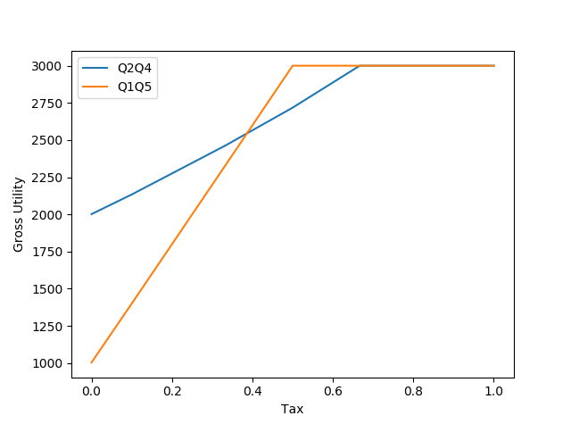

ボランティアについてのゲーム理論的なモデル
環境保護などを想定したボランティアについてゲーム理論的なモデルを考え、所得税からNPOを支援するような「協力」の必要性を考える。
ゲーム理論の枠組の他に人工経済的なモデルも作り、競争によって高い全体効用から低い全体効用に滑り落ちる「囚人のジレンマ」的な状況が、ゲーム理論では説明できないが、シミュレーションではそのようになりうる例を示す。
なお、本稿は、(ほぼ)「ボランティア・ジレンマ」とは関係がない。
■はじめに
お金を稼がねばならない。でも、その方法がわからない。人に役に立つことをすれば、自然にお金が恵ってくる。人に役に立つことをしようとするべきだ。…本当にそうだろうか？
環境保護などのボランティアについて、自然にそこに人が集まるようになるだろうか。むしろ自然にはボランティアをする人がいるほうがいいとわかっていても、儲からないため人が集まらず、社会の全体的な効用が本来達成できるレベルに行かないことのほうが多いのではないか。
それを所得税からNPOを支援するような「協力」…税からの再分配が解決できるのではないか。
■ゲーム理論からのアプローチ
本来達成できるはずの効用が達成できないというジレンマ的な状況を分析するツールと言えばゲーム理論である。
示したいのはだいたい次のようなことである。
<b>Q0</b>二者のモデルを考える。一人が環境保護などのボランティアをすると、両者にプラスの効用がある。もう一人はその間仕事ができる。二人が仕事をしても両者のプラスは限られるが、一方だけが仕事をすると高い報酬が得られる。このとき、仕事をした側がボランティアに報酬から金を払うことで、双方もっとも高い効用が得られるだろう。
これが無矛盾でありうることを示すための数値例を考える。
直感的に次のような数値例を考えた。
<b>Q1</b>ボランティアをすると、その労力に -1 の効用、達成感で +1 の効用、環境改善で両者に +2 ずつの効用があるとする。両者がボランティアをすると両者とも +1 の達成感を得るが、環境改善は +2 のまま、+4 とかにはならないものとする。
仕事をすると、その労力に -1 の効用、達成感で +1 の効用、報酬 2 を得て効用が +2 とする。両者が仕事をした場合、報酬はそれぞれ 1 を得て効用が +1 とする。
両者がボランティアをする場合、効用は、それぞれ 2。両者が仕事をすると、効用は、それぞれ、1。片方が仕事、もう片方がボランティアの場合、仕事をしたほうが 4、ボランティアをしたほうが 2 になる。
これを確認するのに、Python のナッシュ均衡解答パッケージの Nashpy を使う。だいたい次のようなソースを書き…、(「(…)」 は省略記号。)
import nashpy as nash
import numpy as np
(…)
A = np.array([[2, 4], [2, 1]])
B = np.array([[2, 2], [4, 1]])
G = nash.Game(A, B)
equilibria = G.support_enumeration()
for eq in equilibria:
print(eq, np.sum(G[eq]))
実行すると、だいたい次のような出力が得られる。
$ python volunteer_game_1.py
Q1
(array([1., 0.]), array([1., 0.])) 4.0
(array([1., 0.]), array([0., 1.])) 6.0
(array([0., 1.]), array([1., 0.])) 6.0
(…)
これを解釈すると、Q1 は、ボランティアを両方がする場合も、片方のみボランティアの場合もナッシュ均衡になる。効用が小さい両方が仕事をするという場合は選択されることがない。…ということで Q0 の例としては適当ではないことがわかる。
(以降はプログラムを示さないが、ゲーム理論を使っているところは、 volunteer_game_1.py でまとめて計算した結果を用いている。また、混合戦略解については無視して論を進める。)
ここからいじっていろいろ試したところ、次のようにすればよいことがわかった。
<b>Q2</b>ボランティアは全体として労力を -2 の効用分使う。一人でやれば -2、二人でやれば -1。やれば達成感でそれぞれ +1 の効用がある。そして、環境改善で両者に +2 ずつの効用があるとする。両者がボランティアをしても環境改善は +2 のまま、+4 とかにはならないものとする。
仕事をすると、それぞれその労力に -1 の効用、達成感に +1 の効用。一人の場合は、報酬 3 を得て効用が +3 とする。両者が仕事をした場合、報酬それぞれ 2 を得て効用が +2 とする。
両者がボランティアをする場合、効用は、それぞれ 2。両者が仕事をすると、効用は、それぞれ、2。片方が仕事、もう片方がボランティアの場合、仕事をしたほうが 5、ボランティアをしたほうが 1 になる。
Q2 は、両方仕事をする場合のみナッシュ均衡となる。
<b>Q3</b>この Q2 において、片方のみが仕事をしているとき所得税を課し、仕事をしたほうの報酬 2 をボランティアをした者に与えることにする。
<b>Q4</b>Q2 において、2/3 の所得税を課し、ボランティアがいれば、その者に分配する。ボランティアがいなければ税だけ課される。
Q3 は、片方が仕事をし、片方がボランティアをするのが(あと、0.5 ずつランダムに行う混合戦略が)ナッシュ均衡になる。Q4 も、片方が仕事をし、片方がボランティアをするのが(あと混合戦略が)ナッシュ均衡になる。
Q2 と Q4 (Q3)は、Q0 の数値例として適当なようだ。ただ、Q3 と Q4 は、仕事をした側が半分以上をボランティアに渡すわけで現実的ではないかもしれないが。
■人工経済モデル
Q4 はどちらが仕事をするかで二つの均衡解が存在し、現実でいきなりはじめたときにどちらが選択されるかはわからない。二人ではなくもっとたくさんいる場合に、得をするよう少しずつ選択が行われていったとき、平衡に致るようなモデルも考えられる。
そういった「人工経済」的モデルを試してみる。
仕様は次のようにする。
●1000人が仕事かボランティアをする。
●仕事をしている者から所得税を取り、それをボランティアをしている者で分配する。仕事は人数分を分配する分の報酬(distributable な報酬)とそれぞれ 1 の報酬(basic な報酬)からなるとする。税は 2/3 とられるとする。
●ボランティアは、ボランティアの人数 N_volunteers が全人口 N_population の半分までなら、労力 2 を使い、それ以上なら 全仕事量は 2 * (N_population / 2) で変わらないとする。1.0 * N_population / N_volunteers が一人当りの労力になる。ボランティアの効用は、 N_population / 2 まで N_volunteers * 4 とし、それ以降は 4 * (N_population / 2) で変わらないとする。
●(ボランティアの効用 - 仕事の効用) の大きさに応じて、戦略を変える人数が変わるとする。
この仕様に基づき、実際に作ったプログラムが volunteer_game_2.py である。ただし、「(ボランティアの効用 - 仕事の効用) の大きさに応じて、戦略を変える人数が変わるとする。」とする部分は、変えた。効用が大きい方の比率を増やしながら行う二分探索にした。そのほうが結果的に効率的に思えたから。最初は二分探索を使わず「大きさに応じて」というのを愚直に実装していたが、いろいろな例を試していて収束がうまくいかないことがあり、その都度、動かす幅を指定したりしていたが、それが面倒だった。
実行すると、次のようになる。
$ python volunteer_game_2.py
Step 1
workers:volunteers : 858 : 142
utility of workers:volunteers : 1.289833721833722 : 8.291004694835681
gross utility : 2284.0
(…)
Step 10
workers:volunteers : 500.0 : 500.0
utility of workers:volunteers : 3.0 : 3.0
gross utility : 3000.0
workers と volunteers はそれぞれ仕事をする人とボランティアをする人の数。 utility of workers:volunteers は、それぞれの効用。gross utility は全体効用(効用を足し合わせたもの)。workers と volunteers の初期値はランダムに選んでいる(--init-fluid-workers で指定することも可能)。
なお、workers も volunteers も 0 人になると、評価が難しくなるので、最低限、1人は含まれるようにしている。
上のように Q4 に相当する人口経済では、workers:volunteers が 500 人ずつで釣り合う。
これに対し、Q2 に対応する状況は --tax=0 を指定することで試せる。
$ apython volunteer_game_2.py --tax=0
Step 1
workers:volunteers : 796 : 204
utility of workers:volunteers : 3.0722814070351756 : -0.18400000000000005
gross utility : 2407.9999999999995
(…)
Step 9
workers:volunteers : 999.0 : 1.0
utility of workers:volunteers : 2.005001001001001 : -0.996
gross utility : 2002.0
まず、最後の結果に着目すると、ボランティア固定の一人を除いてすべての人が仕事を選択するのがわかる。Step 1 の gross utility と比較すればわかるように全体効用はそれにより下がるにもかかわらず…である。
競争によって高い全体効用から低い全体効用に滑り落ちる「囚人のジレンマ」的な状況が、人工経済的モデルでも確認できた。
さて、volunteer_game_2.py を Q1 的状況に対応するようにも拡張できる。それは次のようにオプションを指定すればいい。
$ python volunteer_game_2.py --max-labor-per-volunteer=1.0 \
--basic-reward-per-worker=0.0 --tax=0
Step 1
workers:volunteers : 341 : 659
utility of workers:volunteers : 4.932551319648094 : 2.0
gross utility : 3000.0
(…)
Step 11
workers:volunteers : 999.0 : 1.0
utility of workers:volunteers : 1.005001001001001 : 0.004
gross utility : 1004.0000000000001
Q1 的状況でも、--tax=0 なら、すべてが仕事をするようになる。これはゲーム理論とは答えが違う。が、Q1 を作った私の直感はこうなるとむしろ正しかったと言える。
Q1 に関して税を取ることを考える。
<b>Q5</b>Q1 において、1/2 の所得税を課し、ボランティアがいれば、その者に分配する。ボランティアがいなければ税だけ課される。
Q5 は、片方が仕事をし、片方がボランティアをするのが(あと混合戦略が)ナッシュ均衡になる。
Q5 的状況を人工経済モデルで試してみる。
$ python volunteer_game_2.py --max-labor-per-volunteer=1.0 \
--basic-reward-per-worker=0.0 --tax=0.5
Step 1
workers:volunteers : 113 : 887
utility of workers:volunteers : 6.424778761061947 : 2.5636978579481395
gross utility : 2999.9999999999995
(…)
Step 10
workers:volunteers : 500.0 : 500.0
utility of workers:volunteers : 3.0 : 3.0
gross utility : 3000.0
ゲーム理論と同じく、片方がボランティア、片方が仕事というふうに人数的にはっきりわかれる。
Q1 的状況設定でも Q0 に相当することが言えたとできる。
税率(tax)と全体効用(gross utility)のグラフをサンプル数は tax=[0.0, 0.1, 1/3, 0.5, 2/3, 0.9, 1.0] と少ないものの描いてみる。

グラフを見ると、tax がある程度高くなれば、それ以降、最大効用が達成されることがわかる。つまり乱暴に tax を増やせばとにかく最大効用にはなるというのが示唆になるかもしれない。ただ、一人あたりの所得がどこまでも増えるという仮定があるため、それをなくせばまた違った結果(ほどほどの tax が最大効用)になるだろう。
■結論
Q0「一人が環境保護などのボランティアをすると、両者にプラスの効用がある。もう一人はその間仕事ができる。二人が仕事をしても両者のプラスは限られるが、一方だけが仕事をすると高い報酬が得られる。このとき、仕事をした側がボランティアに報酬から金を払うことで、双方もっとも高い効用が得られるだろう。」ということを確認するために、一つはゲーム理論的なモデルを作り、もう一つは、人工経済的なモデルを作った。そして、両モデルで確認できた。
非協力的な状況設定で、税を通じた「協力」の必要を示せたと思う。
さらに、ゲーム理論的なモデルでは Q0 を説明できないと見える直感的に作った Q1 のモデルについても、それに相当する人工経済的なモデルでは Q0 を説明しうることが示せた。
ゲーム理論をよく複数の場合に単純に拡張して論じることがあるが、今回の結果をみるとそれは少しおかしいのではないか？…と感じる。競争によって高い全体効用から低い全体効用に滑り落ちることを「囚人のジレンマ」的な状況と言って、ゲーム理論を参照すべき示唆がなされうるが、むしろ、それを示すのはゲーム理論のほうが難しいというのが本稿の実験が示唆するところであった。
■参考
Python や Nashpy についてググっていろいろ参考にしているが、それについては割愛する。また、過去に読んだ経済学・数学・工学の書籍にもよるところが大きいだろうが、それも割愛する。それらにはとても感謝している。
●《ナッシュ均衡（ざっくりした説明） | NABENAVI.net》。＞ナッシュ均衡は1つとは限らず，2つ以上ある場合もあります．このときどちらをゲーム理論の解とすべきかは難しい問題で，これは「均衡選択」と呼ばれる理論と「均衡精緻化」と呼ばれる理論で考えられています（2つの違いを説明するのはちょっと難しい）これはまた別の機会に．＜人工経済モデルを作るとき「均衡選択」と「均衡精緻化」について知りたいと思ったが適当なドキュメントがネットにはなかった。
●《ミクロ経済学の我流シミュレーション》。micoro_economy_*.py。私が書いた商品市場のシミュレーション。私の人工経済に関する他の記事はここから辿っていただきたい。
■ライセンス
パブリックドメイン。 (数式のような小さなプログラムなので。)
自由に改変・公開してください。
■配布物
今回の配布物は以下の zip ファイル。更新があれば下のリンクの中身は最新のものに置き変わっているはず。volunteer_game_1.py と voklunteer_game_2.py とドキュメント等が入っている。
●volunteer_game.zip
更新：2020-03-02
初公開：2020年03月02日 06:26:29
最新版：2020年03月02日 06:26:29
Comments:
初公開: volunteer_game-20200302.zip。バージョン 0.0.1。
《volunteer_game-20200302.zip》
https://www.sugarsync.com/pf/D252372_79_7154804952
↓に感想を書いたのでよろしければそちらもご参照ください。
[cocolog:91719427]
http://jrf.cocolog-nifty.com/statuses/2020/03/post-23e291.html
＞環境保護などを想定したボランティアについてゲーム理論的なモデルを考え、所得税からNPOを支援するような「協力」の必要性を考えた。ゲーム理論の「御用学問」性を疑う。＜
投稿: JRF | 2020-03-02 06:36:16 (JST)
ここには書いていませんでしたが、↓にもソースがあります。
《GitHub - JRF-2018/volunteer_game: ボランティアについてのゲーム理論的なモデル》
https://github.com/JRF-2018/volunteer_game
投稿: JRF | 2024-07-12 00:29:15 (JST)
Links: ナッシュ均衡（ざっくりした説明） | NABENAVI.net: http://nabenavi.net/nash-equilibrium/ (hbm) ミクロ経済学の我流シミュレーション: http://jrf.cocolog-nifty.com/society/2018/03/post.html (hbm) volunteer_game.zip: https://www.sugarsync.com/pf/D252372_79_7154804554
後方参照 (7 件)
- URL参照 ポパー『開かれた社会とその敵 - 2巻(上・下) にせ予言者… 2024年08月01日
- URL参照 ゲーム理論への批判。資本家側の「御用学問」だという批判ができる。ゲーム理論は回数… 2024-07-11T15:15:30Z
- URL参照 田村光平『文化進化の数理』に目を通した。集団遺伝学の数理モデルを文化「進化」に適… 2022年08月17日
- URL参照 田村光平『文化進化の数理』に目を通した。 『文化進化の数理』(田村 光平 著,… 2022-08-16T19:36:28Z
- URL参照 三浦俊彦『論理パラドクス… 2020年11月30日
- URL参照 フリードマン『資本主義と自由』と藪下史郎『非対称情報の経済学』を読んだ。新自由主… 2020年03月17日
- URL参照 環境保護などを想定したボランティアについてゲーム理論的なモデルを考え、所得税から… 2020年03月02日